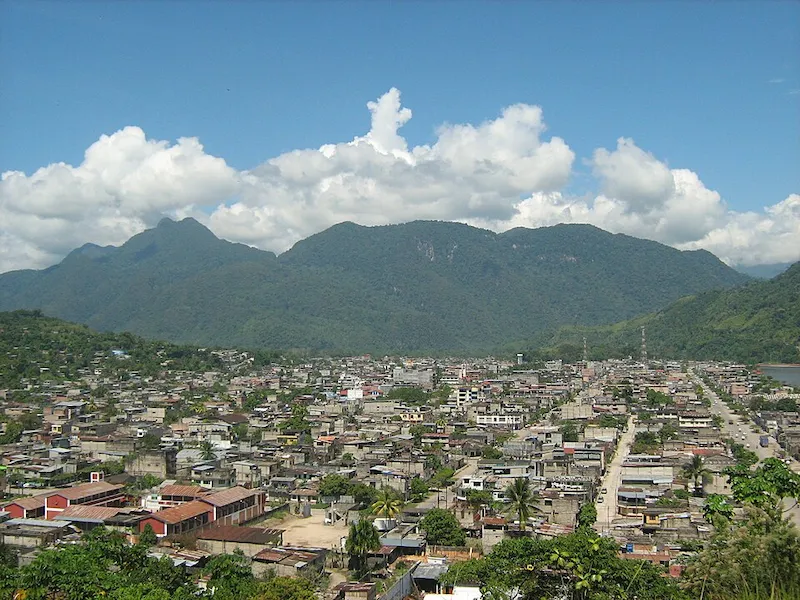

My favorite city is Tingo Maria. It is a small and charming place where you can see a lot of vegetation. This place reminds me of my infancy because I lived there 16 years ago, and the environment where I grew up was unique and full of love for my family.
